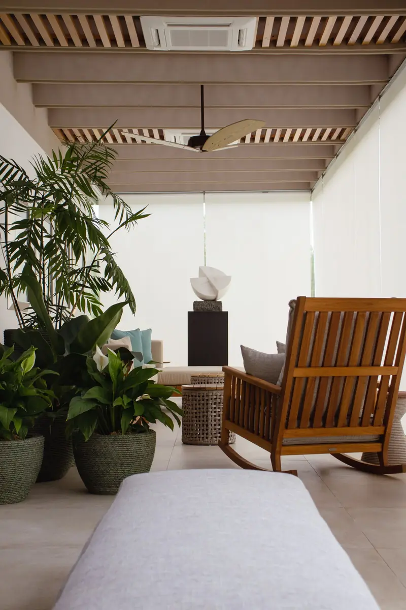
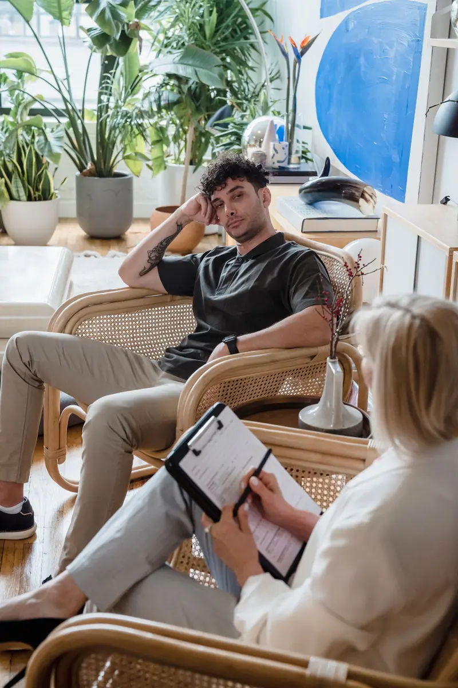

Les neurosciences, simplement
Le cerveau reste capable d’apprendre tout au long de la vie. Nos réactions automatiques — stress, ruminations, habitudes — sont des chemins appris. En les comprenant, on peut en entraîner de nouveaux, pas à pas.
Coaching neurosciences & PNL · Tlemcen
Un accompagnement bienveillant et concret pour apprivoiser le stress, les émotions et les habitudes qui vous freinent — en cabinet à Tlemcen, en visio ou par téléphone.

L’approche
Pas de jargon ni de recette miracle : des repères simples issus des neurosciences et des outils pratiques de la PNL, adaptés à votre situation.
Le cerveau reste capable d’apprendre tout au long de la vie. Nos réactions automatiques — stress, ruminations, habitudes — sont des chemins appris. En les comprenant, on peut en entraîner de nouveaux, pas à pas.
La programmation neuro-linguistique s’intéresse à la façon dont nos mots, nos images mentales et nos croyances influencent nos émotions et nos comportements. Elle propose des exercices pour changer de regard et retrouver des ressources.
Chaque séance part de ce que vous vivez aujourd’hui. On fixe un objectif clair, on expérimente des outils (respiration, ancrage, visualisation, relaxation guidée) et vous repartez avec des exercices simples.
Accompagnements
Chaque accompagnement est personnalisé. Les tarifs sont communiqués sur demande, avant la séance.
Repérer ce qui déclenche la tension, apprendre à faire redescendre la pression et retrouver de la marge au quotidien.
Mieux comprendre l’inquiétude, calmer le flot de pensées et construire des réflexes plus apaisants, en complément d’un éventuel suivi médical.
Identifier les croyances limitantes, reconnaître vos ressources et oser prendre votre place, au travail comme dans la vie personnelle.
Changer une habitude, tenir un objectif, sortir de la procrastination : des petites étapes réalistes et un plan qui vous ressemble.
Accueillir la colère, la tristesse ou la peur sans se laisser déborder, et trouver des façons plus justes de les exprimer.
Travailler sur les pensées du soir, les routines et la détente pour favoriser un endormissement plus serein.
Mieux s’écouter, sortir des malentendus répétitifs et poser ses besoins avec clarté — seul(e) ou à deux.
Des temps de relaxation profonde et de visualisation guidée, en restant conscient(e), pour se détendre et mobiliser ses ressources.
Clarifier un objectif, préparer un changement ou une étape importante, et mettre en place une stratégie mentale efficace.
Déroulement
Choisissez un accompagnement, un format et un créneau en ligne, ou écrivez sur WhatsApp. Le rendez-vous est ensuite confirmé avec vous.
Un temps d’écoute pour comprendre votre situation, ce que vous souhaitez changer et définir ensemble un objectif clair.
Exercices de PNL, respiration, ancrage, visualisation ou relaxation guidée : des outils choisis pour vous, testés pendant la séance.
Vous repartez avec un ou deux exercices simples à pratiquer. Les séances suivantes s’ajustent à vos progrès.
Formats

À Tlemcen, dans un cadre calme et confidentiel. L’adresse vous est communiquée à la confirmation.
Depuis chez vous, par appel vidéo (WhatsApp ou lien envoyé avant la séance). Il suffit d’un endroit tranquille.
Une option simple et souple, idéale pour un suivi régulier ou si la vidéo n’est pas pratique pour vous.
À propos
Younes Bendi · Coach & praticien en PNL
Dr Life est né d’une conviction simple : chacun peut apprendre à mieux vivre avec ses émotions, son stress et ses pensées, à condition d’avoir les bons repères et un espace pour essayer.
Je vous propose un accompagnement bienveillant, sans jugement, qui s’appuie sur des connaissances issues des neurosciences et sur les outils de la PNL. Nous avançons à votre rythme, avec des exercices concrets que vous pouvez reprendre dans votre quotidien.
Témoignages
Questions fréquentes
Non. Il s’agit de coaching et d’accompagnement en PNL. Les séances ne remplacent pas un suivi médical, psychologique ou psychiatrique, et ne doivent jamais conduire à arrêter un traitement. Elles peuvent en revanche venir en complément.
Cela dépend de chaque personne et de l’objectif. On en parle dès la première séance, et vous restez libre d’arrêter ou de continuer à tout moment.
Non. Il s’agit de relaxation guidée et de visualisation : vous restez conscient(e) et pouvez interrompre l’exercice quand vous le souhaitez.
À l’heure du rendez-vous, vous recevez l’appel (ou le lien vidéo). Installez-vous dans un endroit calme, avec des écouteurs si possible.
Les tarifs sont communiqués sur demande, avant la séance, par téléphone ou WhatsApp.
Prévenez le plus tôt possible par téléphone ou WhatsApp en indiquant votre numéro de réservation : on trouve ensemble un autre créneau.
Oui. Ce qui est partagé en séance reste entre vous et le praticien. Les informations de réservation servent uniquement à organiser vos rendez-vous.
Rendez-vous
Choisissez votre accompagnement, le format puis un créneau libre. Le rendez-vous est ensuite confirmé avec vous par téléphone ou WhatsApp.
Chargement du calendrier…
Les séances de coaching et de PNL ne remplacent pas un suivi médical, psychologique ou psychiatrique, ni un traitement en cours. En cas d’urgence, appelez le 14 (Protection civile) ou rendez-vous aux urgences les plus proches.
Contact
Appelez ou écrivez sur WhatsApp : vous recevrez une réponse dès que possible, en dehors des séances.
| Samedi | 09:00–12:00 · 14:00–18:00 |
| Dimanche | 09:00–12:00 · 14:00–18:00 |
| Lundi | 09:00–12:00 · 14:00–18:00 |
| Mardi | 09:00–12:00 · 14:00–18:00 |
| Mercredi | 09:00–12:00 · 14:00–18:00 |
| Jeudi | 09:00–12:00 · 14:00–18:00 |
| Vendredi | Fermé |
Sur rendez-vous uniquement.